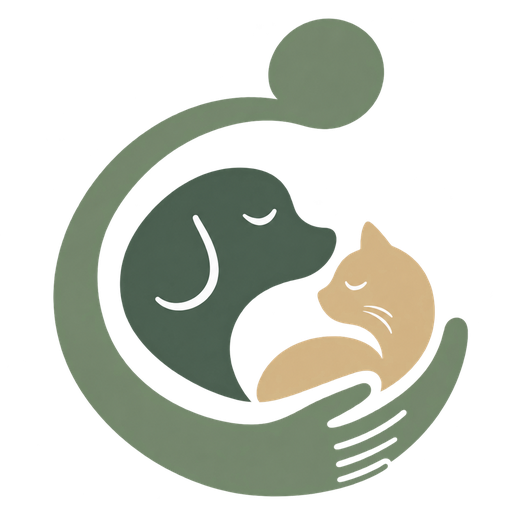

01
Simplicidade
Cada aplicativo resolve uma coisa, e resolve inteira. O que não ajuda no dia a dia não entra.
Aurien
Começamos por dois: o Validi, para controle de validades, e o Aurien Pets, para o cuidado e o acompanhamento dos pets. Os dois estão em desenvolvimento.
A Aurien
A Aurien nasceu da vontade de ter, na palma da mão, informações que ajudassem a compreender o presente e enxergar possibilidades para o futuro.
Criamos aplicativos com propósito: conectar informações, cuidados e metas à história de cada pessoa. Nossa visão é oferecer experiências que ajudem você a reconhecer onde está, compreender suas escolhas e explorar caminhos para o que deseja alcançar.
Cada pessoa tem seu contexto, seu ritmo e seus planos. Queremos acompanhar essa jornada, dando sentido ao que se organiza hoje e continuidade ao que se deseja construir — com cuidado pelo que importa em cada etapa.
O cotidiano
O cotidiano
A Aurien
Os aplicativos
Cada aplicativo resolve uma área do dia a dia — e nenhum deles existe para ser usado o tempo todo. Existe para você não precisar lembrar.
Saber o que vence, quando vence e o que ainda dá tempo de aproveitar. Seus produtos organizados por categoria e por onde ficam guardados, com aviso antes da data — não depois.
Conhecer o aplicativo
Aurien PetsUm sistema de cuidado adaptativo: cada pet tem necessidades próprias e cada cuidado pode ter alguém responsável — preservando contexto e continuidade ao longo da vida.
Conhecer o aplicativoComo trabalhamos
01
Cada aplicativo resolve uma coisa, e resolve inteira. O que não ajuda no dia a dia não entra.
02
O que você precisa lembrar fica guardado em algum lugar confiável — e volta na hora certa.
03
Uma mesma marca, muitas soluções. Cada aplicativo novo é mais uma face da mesma fita.
Aurien
Institucionalcontato@aurien.com.br
Suporte aos aplicativossuporte@aurien.com.br
Prévia em revisão — não é o site oficial da Aurien